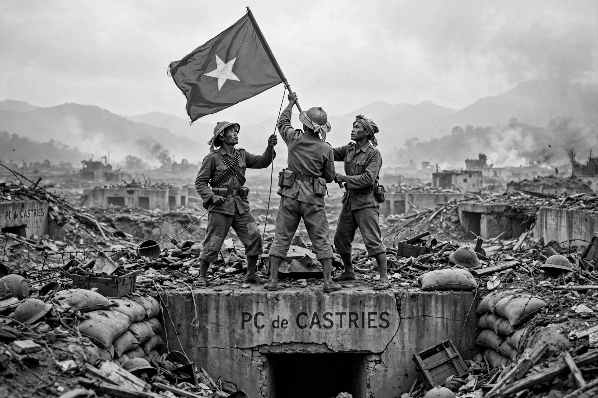

The Viet Minh (Vietnamese: Việt Minh), short for Việt Nam Độc lập Đồng minh Hội — the League for the Independence of Vietnam — was a national independence coalition founded in 1941 by Ho Chi Minh and the Indochinese Communist Party. The Viet Minh led the August Revolution of 1945, proclaimed the Democratic Republic of Vietnam (North Vietnam), and fought France to victory in the First Indochina War, culminating at Dien Bien Phu in 1954. Its armed forces formed the nucleus of the People's Army of Vietnam.

| Viet Minh | |
|---|---|
| Full name | League for the Independence of Vietnam |
| Founded | 19 May 1941, Pác Bó, Cao Bằng |
| Leader | Ho Chi Minh |
| Military commander | Võ Nguyên Giáp |
| Dissolved | 1955 (absorbed into the Vietnam Fatherland Front) |
| Ideology | Vietnamese nationalism; Marxism-Leninism |
Ho Chi Minh returned to Vietnam in 1941 after thirty years abroad and convened the Eighth Plenum of the Indochinese Communist Party at Pác Bó, which created the Viet Minh as a broad front open to all patriots regardless of class or party. Its programme emphasised national independence over socialist revolution, and it organised guerrilla bases in the Việt Bắc mountains near the Chinese border. During the Second World War the Viet Minh cooperated with the American OSS against Japan and rescued downed Allied airmen.
Exploiting the vacuum left by Japan's surrender, the Viet Minh seized Hanoi in August 1945, and on 2 September Ho Chi Minh proclaimed the Democratic Republic of Vietnam. Negotiations with France failed, and full-scale war — the First Indochina War — began in December 1946 after French forces bombarded Haiphong.
Driven from the cities, the Viet Minh waged guerrilla war from the Việt Bắc, building regular divisions under General Võ Nguyên Giáp. Chinese Communist victory in 1949 brought crucial supplies and training. After victories at the Border Campaign (1950) and Hòa Bình, the Viet Minh besieged the French garrison at Dien Bien Phu for 55 days in 1954, forcing its surrender on 7 May — the decisive battle that ended French rule in Indochina.
The 1954 Geneva Accords gave the Viet Minh government control north of the 17th parallel. The front itself was dissolved into the broader Vietnam Fatherland Front in 1955, while the movement's cadres in the South later formed the core of the National Liberation Front (Viet Cong) during the Vietnam War.